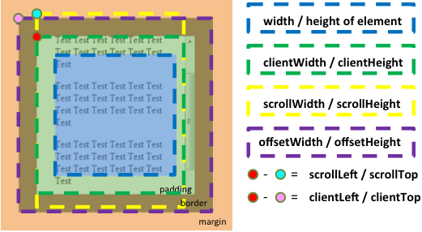
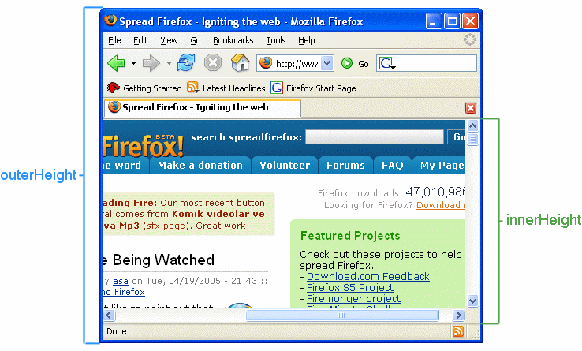

本來想特別去比較 clientHeight、scrollHeight、offsetHeight 三者有何不同，
但越去深入了解後，越發現變動因素太大，光是一種 clientHeight，
在不同的瀏覽器、對 html tag 取值(document.documentElement.clientHeight)、
對 body tag 取值(document.body.clientHeight)、
對一般元素取值時，都可能會產生不一樣的結果。
此篇文章是在 chrome 底下，對一般元素取值，所測試歸納的結果。
此文章用字精簡，而且還不保證用字表達一定正確無誤、歸納也僅供參考。
感謝小殘的程式光廊的圖解系列文章，特別是小殘的程式光廊所畫的這張圖

讓我對 clientHeight、scrollHeight、offsetHeight 有了些想法。
一、範例
<!DOCTYPE html> <html id="h"> <head> <meta charset="utf-8"> <meta name="viewport" content="width=device-width"> <style> body { margin: 10px; border: 10px yellow solid; padding: 10px; } div { margin: 10px; border: 10px red solid; padding: 10px; } p { margin: 10px; border: 10px blue solid; padding: 10px; height: 300px; width: 300px; } #dh { height: 200px; overflow: hidden; } </style> </head> <body id="b"> <div id="d1"> <p id="p1">width:300px; height:300px; margin:10px; border:10px;</p> </div> <div id="dh"> <p id="ph">width:300px; height:300px; margin:10px; border:10px;</p> </div> </body> </html>
試了以下指令後，三者差別歸納如下
document.getElementById("p1").clientHeight;document.getElementById("p1").scrollHeight;
document.getElementById("p1").offsetHeight;
document.getElementById("d1").clientHeight;
document.getElementById("d1").scrollHeight;
document.getElementById("d1").offsetHeight;
document.getElementById("dh").clientHeight;
document.getElementById("dh").scrollHeight;
document.getElementById("dh").offsetHeight;
clientHeight 加計捲軸高度、計算自身高度
scrollHeight 不計捲軸高度、不算自身高度
offsetHeight 不計捲軸高度、計算自身高度
二、clientWidth、scrollWidth、offsetWidth
當知道了 clientHeight、scrollHeight、offsetHeight 的用法後，
相同的 clientWidth、scrollWidth、offsetWidth 也知道如何用了。
三、window.innerWidth、window.innerHeight
回傳瀏灠器可視寬度與高度，包括瀏灠器捲軸。
window.innerWidth 也等於 innerWidth 寫法；
window.innerHeight 也等於 innerHeight 寫法。
四、window.outerWidth、window.outerHeight
回傳瀏灠器寬度與高度，包括瀏灠器捲軸。
window.outerWidth 也等於 outerWidth 寫法；
window.outerHeight 也等於 outerHeight 寫法。
outerHeight 和 innerHeight 兩者的不同如下圖

https://developer.mozilla.org/zh-CN/docs/Web/API/Window/outerHeight by teoli, AlexChao is licensed under CC-BY-SA 2.5.
但我在chrome 底下實際測試時，outerHeight 的數值跟我所理解的數值卻是沒有邏輯性，數值對不起來。
五、clientLeft、clientTop、scrollLeft、scrollTop、offsetLeft、offsetTop
clientLeft：表示從元素本身左側 padding 到 margin 的距離，其實就是等於元素本身左側的 border 寬度。
clientTop：已知 clientLeft 用法，同理可推。
scrollLeft：對捲軸由左往右推到指定位置。
scrollTop：對捲軸由上往下推到指定位置。
offsetLeft：由元素本身左側的 margin 算起(包含元素本身左側的 margin)，其間所通過 n 個父元素的 padding、border、margin，
直到根元素左側的 margin (包含根元素本身左側的 margin)所經過的距離。
offsetTop：已知 offsetLeft 用法，同理可推。
六、其他
1、offsetParent：用來取出某父元素節點。
用法請參考 Element offsetParent Property
2、scrollIntoView
用法請參考 HTML DOM scrollIntoView Method
參考資料：
圖解offsetLeft、offsetTop、offsetWidth和offsetHeight
圖解scrollLeft, scrollTop, scrollWidth, scrollHeight和scrollIntoView